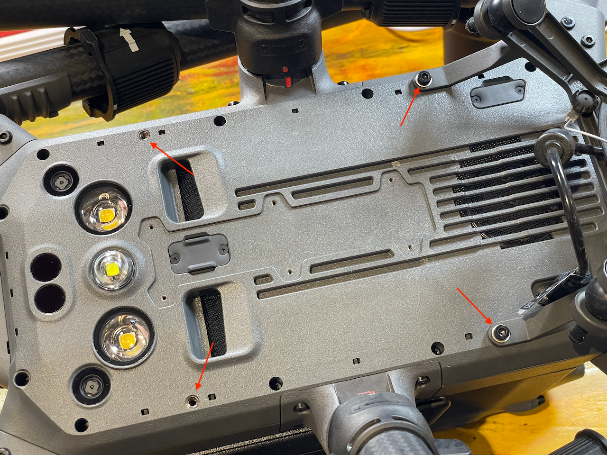
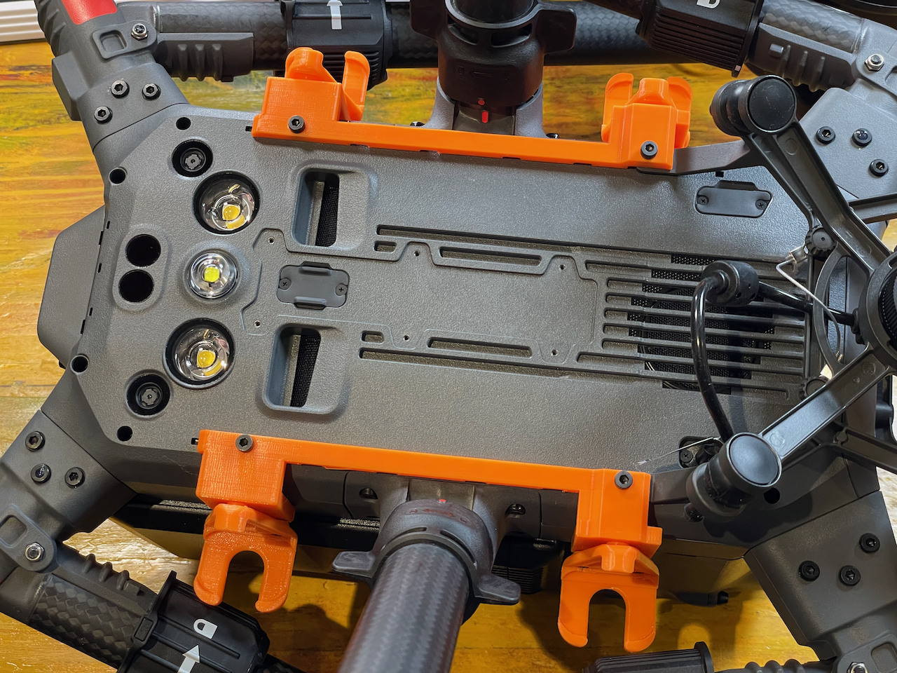
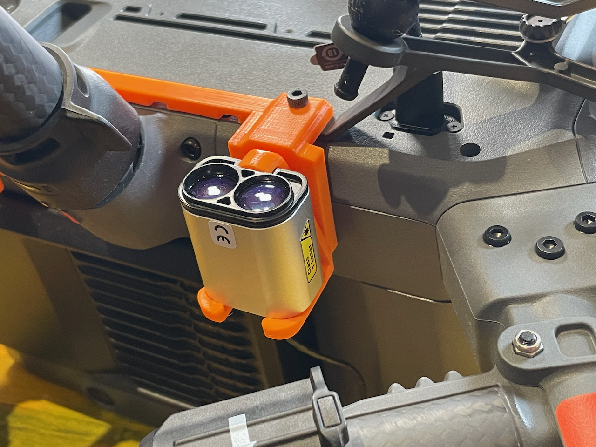
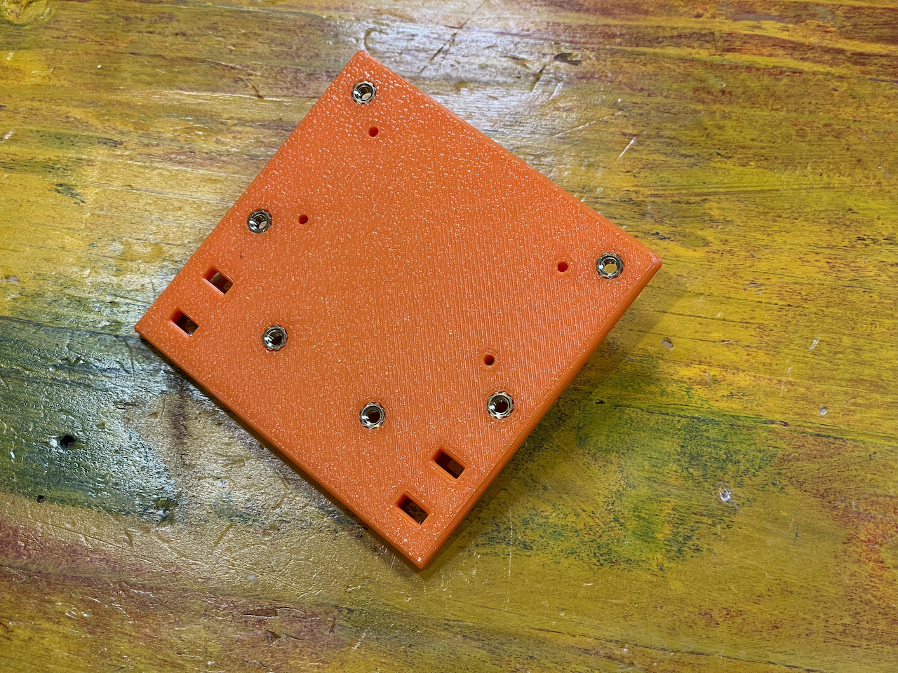
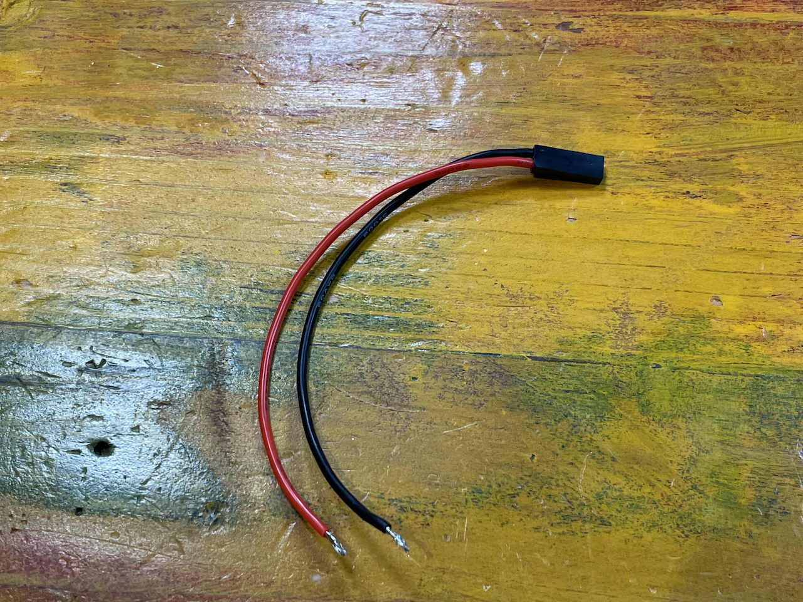
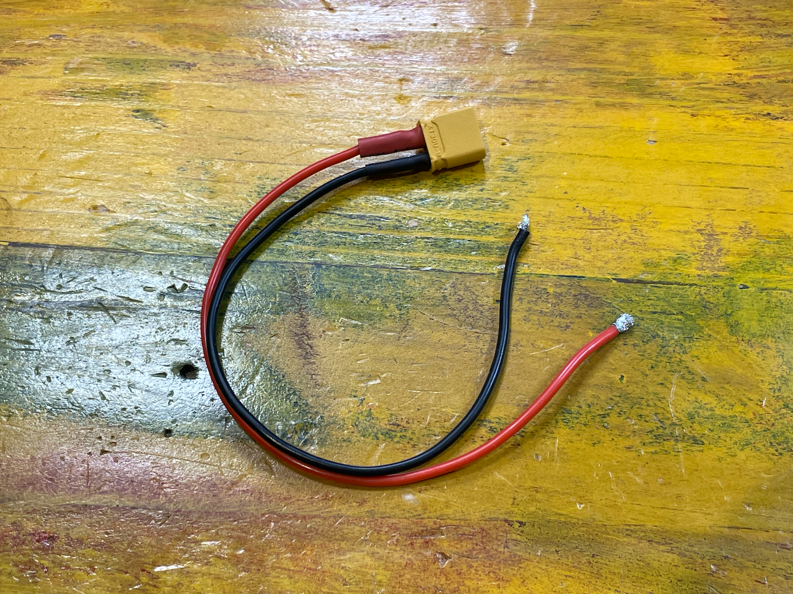
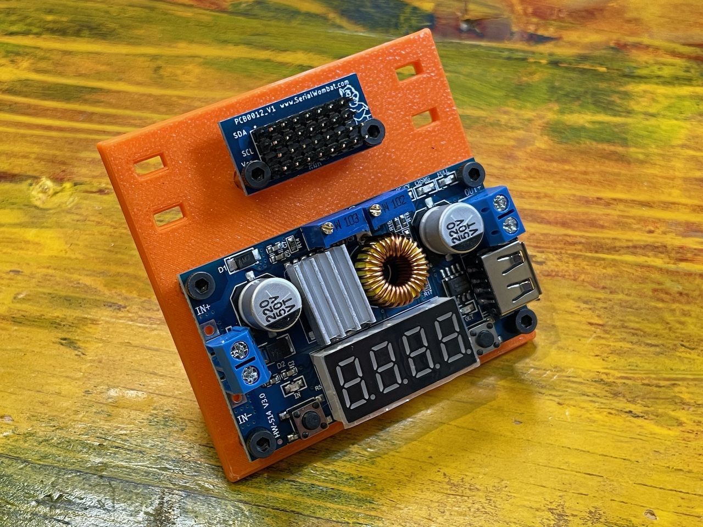
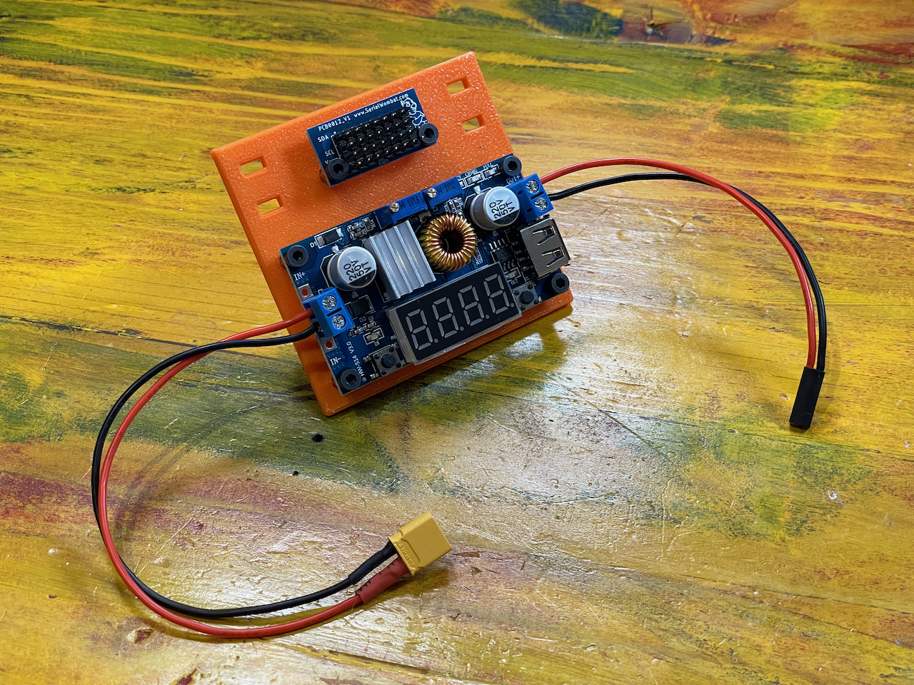
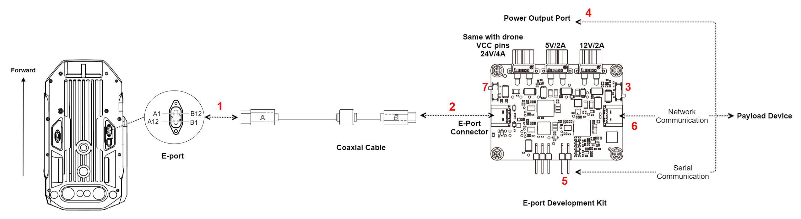

Hardware
We will start by putting the hardware together.
First make sure you have all the parts from the previous section.
Sensors
Preparation
First, we are going to prepare the rails and the clips that will attach the sensors on the belly of the aircraft.
Secure the clips using the counter sunk screws as shown in this picture:

Next, we need to prepare the termination of the sensor to use dupont connectors. Out of the package, you will notice that the LW20/c comes with free wires. This is to give you options as to how to integrate, but in this case, we are going to use dupont connectors for convenience.

Crimp the black (GND), red (VCC), white (RX/SCL) and yellow (TX/SDA) wires individually, then encase them in a connector in this order.

Mounting
Let's start by attaching the 3D printed bracket under the M350.
Flip the aircraft on its 'head' (this is why we do this now, because the compute will be there once we're done). Remove and save the payload screws in case you want to remove the kit later.

Secure both rails using the M3x10mm on the front (where the payload is) and the M3x8mm for the back.

Clip the sensor to the printed parts and use blutack (may be a different color in your country) to hold the cables close to the body of the aircraft.


Note
There are obviously more resilient ways to secure the cables for production deployment, but our approach here is of R&D and quick validation of the end-to-end system.
You may choose to pass the cables and zip tie it all. The rails are ready for this, but you may need to extend the length of the wires for the back sensors.
Otherwise, you can simply guide and putty the cables along the side of the aircraft while making sure not to block the view of the obstacle avoidance sensors.
Once you have secured all four sensors, you are ready to move to the next step.
Compute Unit
Next, we are going to look at mounting the compute unit on the top of the aircraft.
Preparations
First, we will use the M2.5 heat-set inserts for the Raspberry Pi posts on the compute mount. To insert them, simply use a soldering iron at the melting temperature of the plastic you use for printing the model. Pull out when sufficiently inserted.
Note
The heat-set inserts are an optional improvements. If you want to skip them, you can simply use coarse screws - such as wood screws - into the plastic directly.

Next, we will prepare the additional board for the voltage regulator that will provide the bulk of the power to the Raspberry Pi and the I2C breakout board.
Note
You can choose other options for the I2C bus and the voltage regulator as long as you provide what's necessary for the pi to work.
First, we place the heat-set inserts as done before.

Next we are going to prepare the power cables. If you've opted to the ready made cables, you can skip this. If you want to make your own:
Cut two set of black and red pairs of the 20AWG silicon cable: 12cm or 4 3/4" for the power to the Pi; 16cm of 6 1/4" for the power from the E-port Dev Kit.
The Pi cable (12cm) will be crimped and set in a two line dupont connector

The E-Port Dev Kit will be soldered to an XT30 connector.

Mounting
Voltage Regulator and I2C Breakout
To finish the add-on board, use the M3x6mm screws to secure the voltage regulator and the I2C bus breakout to the side board.

Next, connect to the input terminals the E-Port power cable and the Pi power cable to the output.

Note
We will set up the voltage converter soon, but for now do not power anything.
At this point the side board is fully assembled. Set it aside for now.
Raspberry Pi/E-Port
Grab the top mount and let's start with the E-Port Kit. It will sit in the bottom, under the Raspberry Pi. Place the E-Port kit as seen on the picture below, making sure that it sits in between the securing post.

Note
You can secure it with zip ties or bluetac. The putty will do a great work, while the Raspberry Pi posts will prevent it to fly away in case of failure.
Also, note the orientation as it will matter greatly. The "Drone" USB-C port should be facing starboard side of the mount.
Verify that it isn't moving before moving to the next step.
Before we move to the Pi, now is a good time to connect the USB/TTL cable to the pins on the E-Port as you'll be able to see the markings on the PCB.
You can also plug in the USB-C cable that came with the kit, making sure the B side is showing upwards.
Note
The USB-C cable used for DJI development aren't regular USB-C cable. They aren't reversable. This is why they are noted with a A side and a B side. Pay close attention to the orientation as described in the DJI developer documentation: 
Don't plug to the aircraft just yet.
Time to attach the Raspberry Pi. You can choose to bring it with a case if you choose, but the mount we offer is coming with a through hole installation that's only compatible with the naked board or using the official case. Regardless, using the M2.5x6mm screws, secure the raspberry pi with the connectors facing the back of the aircraft.
Don't over tighten.

Assembly
First, we need to prepare the SDCard for the Raspberry Pi. Follow these instructions to get it done
Once finished, place the SD Card in the Pi's slot.
Next, clip the side board to the front of the Pi's mount.

Note
The round clip would be enough to secure it, but if you want, you can secure them further with zip ties.
Connect the XT30 power cable to the E-Port Dev Kit's unregulated power connector.

Connect the short USB-C cable between the device USB port of the E-Port dev kit and the Raspberry Pi's - This will be our fast data line.

Coil the USB to TTL cable around the base of the mount and connect the USB-A connector to one of the Raspberry Pi's

You should have something looking like this:
Now we can connect the I2C pins to the bus and to the Raspberry Pi.
Following the marking on the bus, connect all the sensors to it.

Using the Dupont cables, connect each of the I2C lines to the Raspberry Pi pins
Warning
Pinout from pinout.xyz

At this point, the only unconnected cable should be the power cable output of the voltage regulator. We will plug it after we configured the regulator with the aircraft power.
Aircraft Installation
First, we mount the completed kit to the aircraft using the M3x8mm screws in the back and the M3x15mm in the front.

With the dev kit secured, it's time to connect the usb cable to the aircraft.
Note
As mentioned before, the USB-C cable used for DJI development aren't regular USB-C cable. They aren't reversable. This is why they are noted with a A side and a B side. Pay close attention to the orientation as described in the DJI developer documentation:
From this point onwards, the kit will be powered and able to breakout the data connection to the vehicle, but the Raspberry Pi won't be able to get all the power it wants.